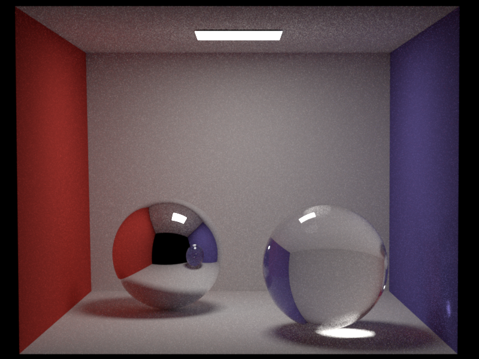
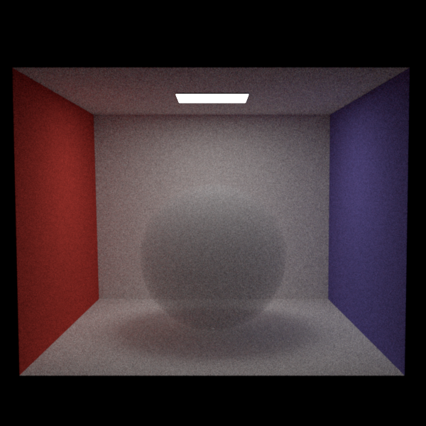
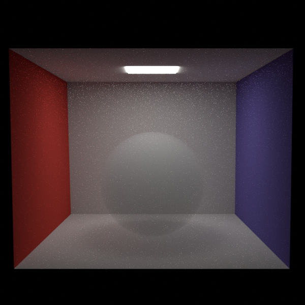
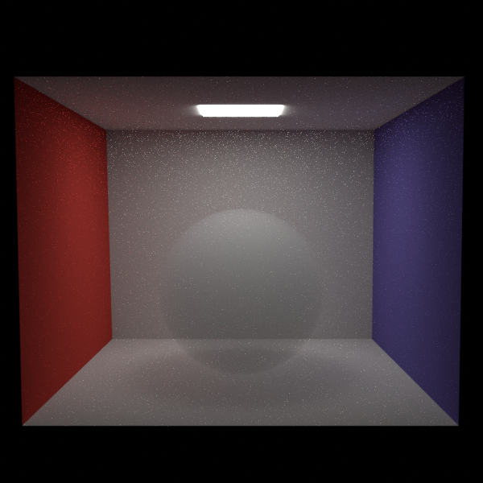
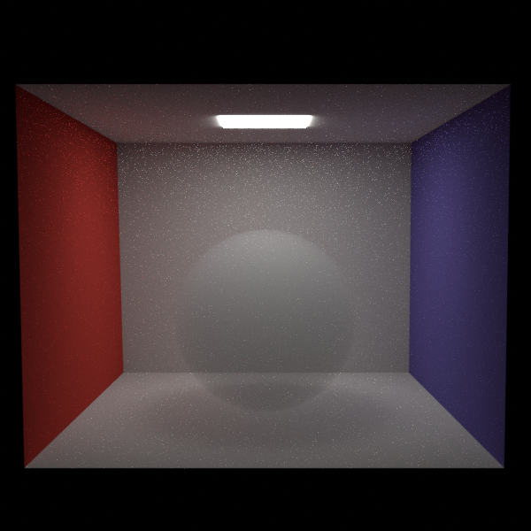

For this feature I started with the homogeneous medium and isotropic phase.
We can sample the free path length and its pdf (transmittance) from a medium. The transmittance supports colors.
A medium can be attached to a shape and a medium has a phase function.
When a ray enters a shape the active medium is updated in the integrator. When it leaves the medium the scene medium replaces it. The scene medium
is a vacuum medium by default, with infinite free path. However, an arbitrary medium can be attached to the scene. There are some limitations to
scene media. They cannot have an emitter and rays that miss the scene currently use the environment map.
To support heterogeneous media I used the delta tracking method to step along the ray and sample the free path distance. This iteration is done to sample
the free path length and again to determine the pdf of sampling that distance.
I used NanoVDB to query the vdb volume I exported in blender. The vdb structure is a child object of the heterogeneous media and contains a density and temperature grid.
I used the NanoVDB viewer as a reference.
Cbox without volumes - Comparison to pa4 path integrators

Cbox homogeneous volume -

 


Isotropic phase, unit density.
Implemented in:
- include/nori/medium.h
- src/media/medium.cpp
- src/media/vacuum.cpp
- src/media/homogeneous.cpp
- src/media/heterogeneous.cpp
- src/integrators/path_vol_mats.cpp
- src/integrators/path_vol_mis.cpp
- include/nori/NvdbVolume.h
- src/textures/NvdbVolume.cpp
- src/textures/NvdbVolume.vdb.cpp